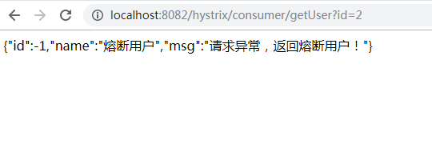
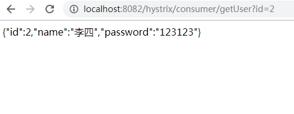

原文连接:https://www.cnblogs.com/haha12/p/11690489.html
Hystrix [hɪst'rɪks]，中文含义是豪猪，因其背上长满棘刺，从而拥有了自我保护的能力。本文所说的Hystrix是Netflix开源的一款容错框架，同样具有自我保护能力。
本文目录
一、Hystrix简介二、Hystrix的设计原则三、Hystrix的工作原理四、Ribbon中使用熔断器五、Feign中使用熔断器六、踩到的坑
一、Hystrix简介
Hystrix是由Netflix开源的一个延迟和容错库，用于隔离访问远程系统、服务或者第三方库，防止级联失败，从而提升系统的可用性、容错性与局部应用的弹性，是一个实现了超时机制和断路器模式的工具类库。
二、Hystrix的设计原则
- 防止任何单独的依赖耗尽资源（线程）
过载立即切断并快速失败，防止排队 - 尽可能提供回退以保护用户免受故障
- 使用隔离技术（例如隔板，泳道和断路器模式）来限制任何一个依赖的影响
- 通过近实时的指标，监控和告警，确保故障被及时发现
- 通过动态修改配置属性，确保故障及时恢复
- 防止整个依赖客户端执行失败，而不仅仅是网络通信
三、Hystrix的工作原理
- 使用命令模式将所有对外部服务（或依赖关系）的调用包装在HystrixCommand或HystrixObservableCommand对象中，并将该对象放在单独的线程中执行。
- 每个依赖都维护着一个线程池（或信号量），线程池被耗尽则拒绝请求（而不是让请求排队）。
- 记录请求成功，失败，超时和线程拒绝。
- 服务错误百分比超过了阈值，熔断器开关自动打开，一段时间内停止对该服务的所有请求。
- 请求失败，被拒绝，超时或熔断时执行降级逻辑。
- 近实时地监控指标和配置的修改。
当使用Hystrix封装每个基础依赖项时,每个依赖项彼此隔离，受到延迟时发生饱和的资源的限制，并包含回退逻辑，该逻辑决定了在依赖项中发生任何类型的故障时做出什么响应。
四、Ribbon中使用熔断器
按照下面步骤改造之前的项目spring-cloud-consumer-ribbon
- pom.xml引入jar包
<!-- 整合hystrix -->
<dependency>
<groupId>org.springframework.cloud</groupId>
<artifactId>spring-cloud-starter-netflix-hystrix</artifactId>
</dependency>
- 启动类上添加@EnableHystrix注解
在启动类上添加@EnableHystrix注解开启Hystrix的熔断器功能，改造后启动类如下：
@EnableHystrix //在启动类上添加@EnableHystrix注解开启Hystrix的熔断器功能。
@EnableEurekaClient
@SpringBootApplication
public class RibbonConsumerApplication {
//当添加@LoadBalanced注解，就代表启动Ribbon,进行负载均衡
@LoadBalanced
@Bean
public RestTemplate restTemplate() {
return new RestTemplate();
}
public static void main(String[] args) {
SpringApplication.run(RibbonConsumerApplication.class, args);
}
}
- 添加HystrixConsumerController
在需要有熔断机制的方法上添加 @HystrixCommand，属性fallbackMethod是熔断时返回的方法，编写完成后HystrixConsumerController.java代码如下：
/**
* 消费者
*/
@Slf4j
@RestController
@RequestMapping("/hystrix/consumer")
public class HystrixConsumerController {
@Autowired
private RestTemplate restTemplate;
/**
* 调用 user微服务
*/
@HystrixCommand(fallbackMethod = "getDefaultUser")
@GetMapping("getUser")
public String getUser(Integer id) {
String url = "http://user-service/provider/getUser?id=" + id;
return restTemplate.getForObject(url, String.class);
}
public String getDefaultUser(Integer id) {
System.out.println("熔断，默认回调函数");
return "{\"id\":-1,\"name\":\"熔断用户\",\"password\":\"123456\"}";
}
}
- 开始测试
代码编写之后，按顺序启动spring-cloud-eureka、spring-cloud-user-service和spring-cloud-consumer-ribbon，此时打开浏览器访问http://localhost:8082/hystrix/consumer/getUser?id=2，服务正常，截图如下：

服务正常截图
然后停服务spring-cloud-user-service，再次访问访问http://localhost:8082/hystrix/consumer/getUser?id=2，此时会触发熔断，截图如下：
触发熔断后截图
五、Feign中使用熔断器
Feign在整合到Spring Cloud时已经自带了hystrix模块，所以pom.xml中不需要额外引入feign依赖。
新建一个spring boot项目spring-cloud-consumer-fegin-hystrix，按照下面步骤操作。
- application.yml中开启熔断器
server:
port: 8082 #服务端口
eureka:
client:
serviceUrl:
defaultZone: http://localhost:9001/eureka/
spring:
application:
name: fegin-hystrix-consumer
feign:
hystrix:
# feign熔断器开关
enabled: true
- 新建一个FeignClient接口
新建一个FeignClient接口UserFeginService并指定fallback，代码如下：
//表示"user-service"的服务，指定fallback
@FeignClient(value = "user-service", fallback = UserFeginFailBackImpl.class)
public interface UserFeginService {
@RequestMapping(value = "/provider/getUser")
public String getUser(@RequestParam("id") Integer id);
}
@FeignClient注解参数说明：
-
name：指定FeignClient的名称，如果项目使用了Ribbon，name属性会作为微服务的名称，用于服务发现。
-
fallback: 定义容错的处理类，当调用远程接口失败或超时时，会调用对应接口的容错逻辑，fallback指定的类必须实现@FeignClient标记的接口。
-
fallbackFactory: 工厂类，用于生成fallback类示例，通过这个属性我们可以实现每个接口通用的容错逻辑，减少重复的代码
-
path: 定义当前FeignClient的统一前缀，类似于注解到类上的@RequestMapping的功能
- 添加熔断处理类UserFeginFailBackImpl
代码如下：
@Slf4j
@Component
public class UserFeginFailBackImpl implements UserFeginService {
@Override
public String getUser(Integer id) {
log.info("熔断，默认回调函数");
return "{\"id\":-1,\"name\":\"熔断用户\",\"msg\":\"请求异常，返回熔断用户！\"}";
}
}
- 添加Controller
添加FeginHystrixController，用于调用user-service，代码如下：
@RestController
@RequestMapping("/hystrix/consumer")
public class FeginHystrixController {
@Autowired
private UserFeginService userFeginService;
@GetMapping("/getUser")
public String getUser(Integer id) {
return userFeginService.getUser(id);
}
}
5 开始测试
代码编写之后，按顺序启动spring-cloud-eureka、spring-cloud-user-service和spring-cloud-consumer-fegin-hystrix，此时打开浏览器访问http://localhost:8082/hystrix/consumer/getUser?id=2，服务正常，截图如下：
服务正常截图
然后停服务spring-cloud-user-service，再次访问访问http://localhost:8082/hystrix/consumer/getUser?id=2，此时会触发熔断，截图如下：

触发熔断后截图
六、踩到的坑
- hystrix的异常fallback method wasn't found
出现这个异常是因为指定的备用方法和原方法的参数个数或类型不同造成的，所以需要统一参数的类型和个数。
到此SpringCloud两种方式整合Hystrix的功能已经全部实现，有问题欢迎留言沟通哦！
完整源码地址： https://github.com/suisui2019/springboot-study
推荐阅读
1.SpringCloud系列-利用Feign实现声明式服务调用）
2.手把手带你利用Ribbon实现客户端的负载均》
3.SpringCloud搭建注册中心与服务注册
4.Spring Boot配置过滤器的两种方式！
5.编码神器Lombok，学会后开发效率至少提高一倍！
限时领取免费Java相关资料，涵盖了Java、Redis、MongoDB、MySQL、Zookeeper、Spring Cloud、Dubbo/Kafka、Hadoop、Hbase、Flink等高并发分布式、大数据、机器学习等技术。
关注下方公众号即可免费领取：
 Java碎碎念公众号
Java碎碎念公众号